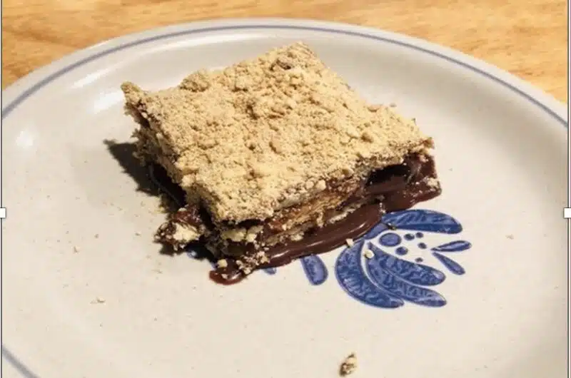

Marquesa de Chocolate

Description
Marquesa de Chocolate is a decadent and incredibly popular Venezuelan dessert, often described as a no-bake
chocolate cake or a rich chocolate mousse. It's characterized by its smooth, creamy texture and intense
chocolate flavor, making it a perfect treat for chocolate lovers.
Ingredients
- 2 1⁄2 packages Maria Galletas or Maria Cookies (easily found in the Latino aisle of most grocery stores)
- 2 bars semi-sweet chocolate (or 1 bag of semi-sweet chocolate chips)
- 1 stick butter
- 1 can sweetened condensed milk
- 1 cup whole milk
- 1 tsp vanilla extract
- 2 Tbsp liquor of your choice, divided. Recommended: rum, brandy or Bailey’s Original Irish Cream.
Steps
- Melt the butter and the chocolate in a saucepan over low heat, breaking the chocolate into pieces and
stirring constantly.
- Add the condensed milk to the butter and chocolate mixture. Mix well.
- Stir in 1 Tbsp of your liquor of choice. The consistency should be not too thick, not too runny. Add a
splash of milk, if you need to thin the mixture.
- In a shallow bowl, mix the milk, vanilla extract and 1 Tbsp of liquor.
- Dip each Maria Cookie into the milk–vanilla-liquor mixture and place in a single layer In a 9 x 13” glass
baking dish. Be careful not to dip the cookie for too long or it will break. Fill in the spaces between the
cookies with smaller, broken pieces.
- Pour and spread ⅓ of the chocolate mixture over the cookie layer, making sure it is spread evenly across the
top of all the cookies.
- Repeat steps 5 and 6 two more times, so there are 3 layers total of Maria Cookies and the chocolate mixture.
- Take the remaining cookies and break them into tiny pieces, using a food processor or put them in a zip bag
and crumble them by hand. Pour an even, final layer of cookie crumbles evenly on the top-most chocolate
layer.
- Put the cake in the freezer for at least 2 hours before taking it out and cutting into squares. Enjoy!
Home